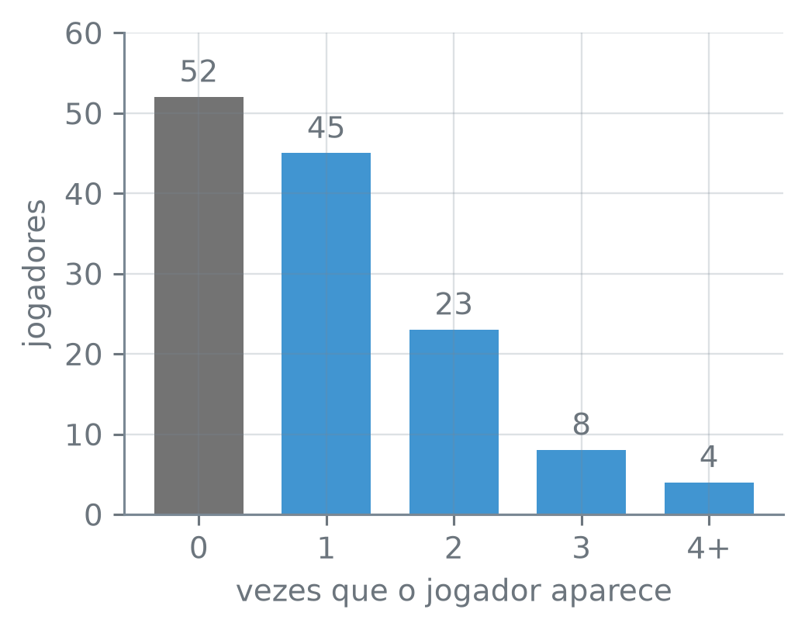
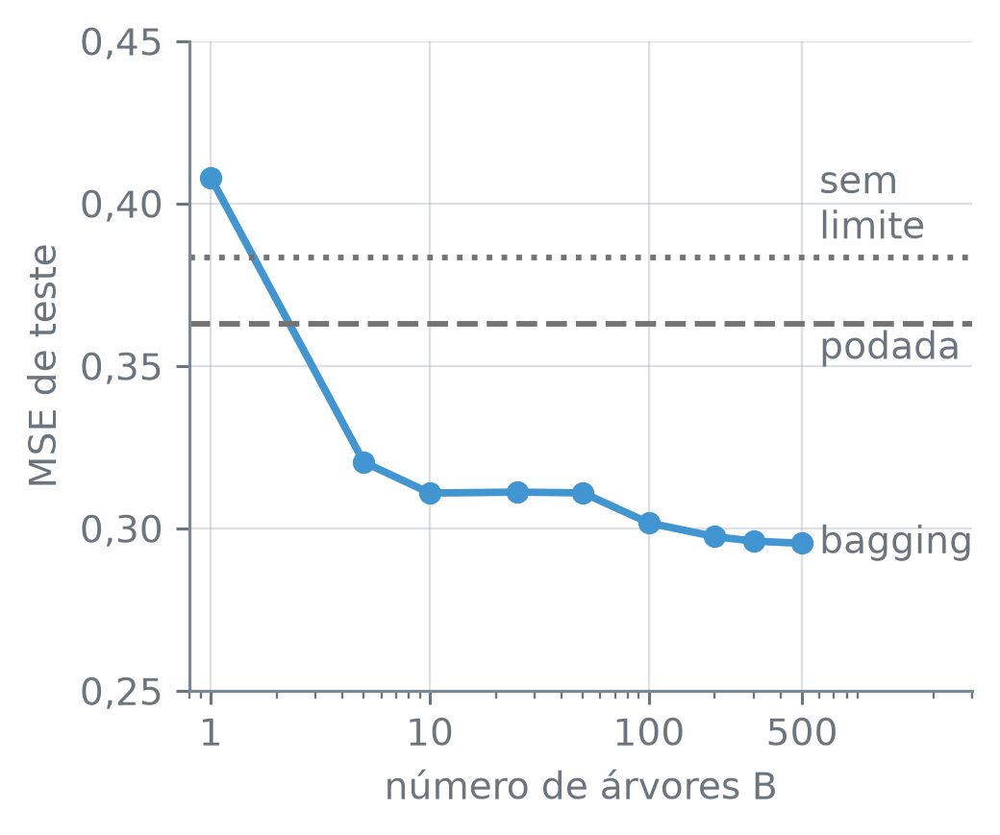

numero_br = lambda valor, casas=2: (
f"{valor:,.{casas}f}".replace(",", "_").replace(".", ",").replace("_", ".")
.replace("-", "−")
)Bagging
Nota
Esta seção corresponde à seção 8.2.1 de James et al. (2023).
Uma árvore de regressão crescida até o fim prevê o salário de um jogador de beisebol de um jeito com uma amostra de treino e de outro jeito com outra. Se houvesse muitas amostras de treino, daria para ajustar uma árvore em cada uma e tirar a média das previsões, e a média oscilaria menos que cada árvore. Mas só existe uma amostra. Dá para fabricar outras a partir dela?
A função numero_br escreve os números com a pontuação brasileira:
Média de muitas previsões
Tirar a média reduz a variância. Se uma medida tem variância \(\sigma^2\), a média de 4 medidas independentes tem variância \(\sigma^2/4\), e a de 100, \(\sigma^2/100\). Com \(n\) medidas independentes, a média tem variância \(\sigma^2/n\). A mesma conta vale para previsões. Com \(B\) conjuntos de treino separados, tirados da mesma população, daria para ajustar um modelo em cada um, obter as previsões \(\hat f^1(x), \hat f^2(x), \dots, \hat f^B(x)\) e ficar com a média delas,
\[ \hat f_{\text{avg}}(x) = \frac{1}{B} \sum_{b=1}^{B} \hat f^b(x), \]
um modelo de variância menor que a de cada \(\hat f^b\). A árvore de regressão sem limite de tamanho é a candidata natural: crescida até o fim, ela tem viés baixo e variância alta, porque muda de estrutura quando a amostra muda.
O obstáculo é que quase nunca há \(B\) conjuntos de treino. Há um, e o que se pode fazer é sortear, a partir dele, outros conjuntos parecidos.
Reamostrar com reposição
Os dados são os jogadores de Hitters com salário registrado. A resposta y é o logaritmo do salário, que está em milhares de dólares, e as colunas de texto viram indicadoras. O treino tem 132 jogadores sorteados com a semente 12, e o teste, os outros:
hitters = pd.read_csv("dados/Hitters.csv").dropna()
y = np.log(hitters["salario"])
X = pd.get_dummies(hitters.drop(columns="salario"),
drop_first=True, dtype=float)
treino_X, teste_X, treino_y, teste_y = train_test_split(
X, y, train_size=132, random_state=12)
print("jogadores:", len(hitters), " colunas:", X.shape[1])
print("treino:", len(treino_X), " teste:", len(teste_X))jogadores: 263 colunas: 19
treino: 132 teste: 131pd.read_csv(caminho) — lê um arquivo CSV e devolve um DataFrame. df.dropna() — a tabela sem as linhas que têm algum valor ausente. np.log(x) — o logaritmo natural de cada elemento.
df.drop(columns=coluna) — a tabela sem a coluna dada. pd.get_dummies(df, drop_first, dtype) — troca cada coluna de texto por colunas indicadoras de 0 e 1, uma por categoria; drop_first=True descarta a primeira categoria de cada coluna, que fica implícita nos zeros das outras, e dtype=float grava 0,0 e 1,0. X.shape — o par (linhas, colunas); X.shape[1] é o número de colunas.
train_test_split(X, y, train_size, random_state) — sorteia quais linhas vão para o treino e quais para o teste; train_size=132 põe 132 linhas no treino, e random_state fixa o sorteio.
Uma amostra nova, do mesmo tamanho do treino, sai de sortear 132 vezes um jogador entre os 132, com reposição: o jogador sorteado volta para a urna e pode sair de novo. É a amostra bootstrap. Uns jogadores aparecem duas ou três vezes, outros não aparecem. Antes de rodar o chunk: se o sorteio é repetido 132 vezes entre 132 jogadores, quantos você espera que fiquem de fora?
rng = np.random.default_rng(13)
amostra = rng.choice(132, size=132, replace=True)
print("primeiras:", amostra[:5])
distintos = len(np.unique(amostra))
print("jogadores distintos:", distintos)
print("fração dentro:", numero_br(distintos / 132, 3))
contagem = np.bincount(np.bincount(amostra, minlength=132))
alturas = [*contagem[:4], contagem[4:].sum()]
print("0 a 4+ vezes:", [int(a) for a in alturas])
cores = ["0.45", "C0", "C0", "C0", "C0"]
fig, ax = plt.subplots(figsize=(3.8, 3.0))
barras = ax.bar(["0", "1", "2", "3", "4+"], alturas, color=cores, width=0.7)
for barra, altura in zip(barras, alturas):
ax.text(barra.get_x() + barra.get_width() / 2, altura + 1, str(altura),
ha="center", va="bottom")
ax.set_ylim(0, 60)
ax.set_xlabel("vezes que o jogador aparece")
ax.set_ylabel("jogadores")
plt.tight_layout()
plt.show()primeiras: [118 114 108 112 9]
jogadores distintos: 80
fração dentro: 0,606
0 a 4+ vezes: [52, 45, 23, 8, 4]
np.random.default_rng(semente) — um gerador de números aleatórios do numpy, com a semente que fixa o sorteio. rng.choice(n, size, replace) — sorteia size inteiros entre 0 e n − 1; com replace=True, o mesmo número pode sair mais de uma vez. Aqui, cada número é a posição de um jogador no treino.
np.unique(x) — os valores distintos de x, em ordem crescente. np.bincount(x, minlength) — quantas vezes cada inteiro de 0 em diante aparece em x; minlength=132 garante uma posição para cada jogador, mesmo para quem não saiu. Aplicado duas vezes, conta quantos jogadores apareceram 0, 1, 2… vezes. v.sum() — a soma dos valores de um array; contagem[4:].sum() junta os que apareceram 4 vezes ou mais. int(x) converte cada contagem num inteiro comum, para imprimir.
plt.subplots(figsize=(largura, altura)) — cria uma figura, com o tamanho em polegadas, e o eixo ax em que se desenha. ax.bar(rotulos, alturas, color, width) — uma barra por rótulo, com a altura e a cor dadas; devolve as barras. barra.get_x(), barra.get_width() — a borda esquerda e a largura de uma barra, para centralizar o texto sobre ela. ax.text(x, y, texto, ha, va) — escreve texto na posição (x, y); ha="center" centraliza na horizontal, e va="bottom" põe o texto acima do ponto.
ax.set_ylim — os limites do eixo vertical; ax.set_xlabel, ax.set_ylabel — os nomes dos eixos. plt.tight_layout() — ajusta as margens para que nada fique cortado. plt.show() — exibe a figura pronta.
Nesta amostra, 80 dos 132 jogadores aparecem ao menos uma vez, uma fração de 0,606. Os outros 132 − 80 = 52 ficaram de fora, uma fração de 1 − 0,606 = 0,394. Essa fração muda de uma amostra para outra, mas em torno de um valor fixo. Cada sorteio deixa de pegar um jogador fixo com probabilidade \(1 - 1/n\), e os \(n\) sorteios são independentes, então a probabilidade de ele não sair nenhuma vez é \((1 - 1/n)^n\). Com \(n\) grande, ela se aproxima de \(1/e\). O chunk calcula a fórmula para \(n = 132\) e a compara com a média de mil amostras sorteadas pelo mesmo gerador:
fora = (1 - 1 / 132) ** 132
print("fora, pela fórmula:", numero_br(fora, 4))
print("1/e:", numero_br(np.exp(-1), 4))
dentro = [len(np.unique(rng.choice(132, size=132))) / 132
for _ in range(1000)]
print("dentro, mil amostras:", numero_br(np.mean(dentro), 4))fora, pela fórmula: 0,3665
1/e: 0,3679
dentro, mil amostras: 0,6328np.exp(x) — a exponencial; np.exp(-1) é \(1/e\). np.mean(lista) — a média dos valores.
A fórmula dá 0,3665 fora, e a média das mil amostras, 0,6328 dentro, isto é, 1 − 0,6328 = 0,3672 fora. Em média, um jogador fica fora de pouco mais de um terço das amostras bootstrap, e é essa sobra que permite estimar o erro de teste sem separar mais jogadores (o erro out-of-bag, isto é, medido nos jogadores que ficaram fora de cada amostra, na seção 13.2).
Bagging de árvores
Com as amostras bootstrap no lugar dos \(B\) conjuntos de treino que não existem, a receita é a mesma: ajustar o modelo na \(b\)-ésima amostra e tirar a média das previsões. O asterisco em \(\hat f^{*b}\) marca que o modelo foi ajustado numa amostra bootstrap, e não num conjunto de treino separado como o \(\hat f^b\) de antes.
O bagging (de bootstrap aggregation, agregação de amostras bootstrap) sorteia \(B\) amostras bootstrap do treino, ajusta um modelo em cada uma e prevê com a média
\[ \hat f_{\text{bag}}(x) = \frac{1}{B} \sum_{b=1}^{B} \hat f^{*b}(x). \]
Com árvores de regressão, cada árvore cresce sem limite e não é podada: tem viés baixo e variância alta, e a média das \(B\) árvores ataca a variância.
Com uma resposta qualitativa, como doente ou não, a média de classes não se calcula. A forma mais simples de agregar é o voto majoritário: cada uma das \(B\) árvores prevê uma classe, e a previsão do bagging é a classe mais frequente entre elas.
Para ter com o que comparar, o chunk abaixo ajusta no treino de 132 jogadores as duas árvores da seção 12.2: a árvore sem limite e a árvore podada por custo-complexidade, com o ccp_alpha escolhido por validação cruzada de 6 grupos:
grande = DecisionTreeRegressor(random_state=12).fit(treino_X, treino_y)
alfas = grande.cost_complexity_pruning_path(
treino_X, treino_y).ccp_alphas
grade = np.r_[0.0, np.sqrt(alfas[1:-1] * alfas[2:])][::-1]
busca = GridSearchCV(DecisionTreeRegressor(random_state=12),
{"ccp_alpha": grade},
cv=KFold(6, shuffle=True, random_state=12),
scoring="neg_mean_squared_error")
podada = busca.fit(treino_X, treino_y).best_estimator_
print("folhas, sem limite:", grande.get_n_leaves())
print("folhas, podada:", podada.get_n_leaves())folhas, sem limite: 121
folhas, podada: 4DecisionTreeRegressor(random_state) — a árvore de regressão; sem max_leaf_nodes nem ccp_alpha, ela cresce até não ter mais o que dividir. random_state fixa a ordem em que as colunas são examinadas, que decide empates entre cortes igualmente bons. modelo.fit(X, y) — ajusta o modelo e devolve o próprio modelo. arvore.get_n_leaves() — o número de folhas.
arvore.cost_complexity_pruning_path(X, y).ccp_alphas — os valores de ccp_alpha em que um galho da árvore cai; a grade toma um ponto entre cada dois consecutivos. np.r_[a, b] — junta valores e arrays num array só. np.sqrt(x) — a raiz quadrada de cada elemento.
KFold(k, shuffle, random_state) — divide as linhas em k grupos sorteados. GridSearchCV(estimador, grade, cv, scoring) — o erro de validação cruzada do estimador em cada valor da grade; .best_estimator_ é o modelo reajustado no treino inteiro com o melhor valor.
Agora o bagging de 50 árvores sem limite, no mesmo treino, e o erro de teste dos três modelos nos 131 jogadores de fora:
bagging = BaggingRegressor(DecisionTreeRegressor(), n_estimators=50,
random_state=13).fit(treino_X, treino_y)
modelos = {"sem limite": grande, "podada": podada, "bagging": bagging}
erro = {nome: mean_squared_error(teste_y, m.predict(teste_X))
for nome, m in modelos.items()}
for nome, valor in erro.items():
print(f"{nome}: {numero_br(valor, 4)}")
print("bagging < podada < sem limite:",
erro["bagging"] < erro["podada"] < erro["sem limite"])sem limite: 0,3833
podada: 0,3630
bagging: 0,3109
bagging < podada < sem limite: TrueBaggingRegressor(estimator, n_estimators, random_state) — o bagging: sorteia n_estimators amostras bootstrap do treino, ajusta uma cópia de estimator em cada uma e prevê com a média das previsões. random_state fixa os sorteios.
modelo.predict(X_novo) — as previsões para as linhas de X_novo. mean_squared_error(y, previsto) — o erro quadrático médio.
A árvore sem limite tem mais de uma centena de folhas; a podada tem 4 e erra 0,3630 no teste. O bagging de 50 árvores sem limite erra cerca de 0,31, menos que as duas nesta divisão. O ganho tem um preço: a média de 50 árvores não é uma árvore, e não há um diagrama para ler de cima a baixo, como o da seção 12.1. O que se recupera dele é quais colunas mais pesam nas divisões, a importância de variáveis da seção 13.5.
Quantas árvores
O número de árvores \(B\) é o único parâmetro novo. O chunk ajusta o bagging no mesmo treino com \(B\) de 1 a 500, todos com a mesma semente, e mede o erro nos 131 jogadores do teste:
tamanhos = [1, 5, 10, 25, 50, 100, 200, 300, 500]
erro_B = pd.Series({
B: mean_squared_error(teste_y, BaggingRegressor(
DecisionTreeRegressor(), n_estimators=B, random_state=13)
.fit(treino_X, treino_y).predict(teste_X))
for B in tamanhos})
for B, valor in erro_B.items():
print(f"B = {B}: {numero_br(valor, 4)}")
print("B = 1 acima da sem limite:",
erro_B.loc[1] > erro["sem limite"])
print("B ≥ 5 abaixo da podada:",
bool((erro_B.loc[5:] < erro["podada"]).all()))B = 1: 0,4080
B = 5: 0,3204
B = 10: 0,3109
B = 25: 0,3112
B = 50: 0,3109
B = 100: 0,3017
B = 200: 0,2975
B = 300: 0,2961
B = 500: 0,2954
B = 1 acima da sem limite: True
B ≥ 5 abaixo da podada: Truepd.Series({rotulo: valor, ...}) — uma série a partir de um dicionário; aqui, o erro de teste com \(B\) como rótulo. s.items() — percorre os pares (rótulo, valor). s.loc[5:] — as linhas do rótulo 5 em diante. (s < v).all() — True se a comparação vale em todas as linhas; bool o imprime como True ou False.
Com \(B = 1\), o bagging é uma única árvore sem limite ajustada numa amostra bootstrap, e o erro de teste é 0,4080, acima do da árvore sem limite ajustada nos 132 jogadores. A amostra bootstrap tem só parte dos jogadores distintos, 80 dos 132 na amostra sorteada acima, e uma árvore que vê menos jogadores erra mais. Com 5 árvores o erro já cai para cerca de 0,32, e de 5 árvores em diante todo bagging da grade fica abaixo da árvore podada. A figura mostra a curva inteira:
fig, ax = plt.subplots(figsize=(3.8, 3.2))
ax.plot(erro_B.index, erro_B.values, color="C0", marker="o")
ax.axhline(erro["podada"], color="0.45", linestyle="--", linewidth=1.5)
ax.axhline(erro["sem limite"], color="0.45", linestyle=":", linewidth=1.5)
ax.text(600, erro_B.iloc[-1], "bagging", va="center")
ax.text(600, erro["podada"] - 0.002, "podada", va="top")
ax.text(600, erro["sem limite"] + 0.002, "sem\nlimite", va="bottom")
ax.set_xscale("log")
ax.set_xlim(0.8, 3000)
ax.set_xticks([1, 10, 100, 500], ["1", "10", "100", "500"])
ax.set_ylim(0.25, 0.45)
ax.set_yticks(np.arange(0.25, 0.46, 0.05))
ax.yaxis.set_major_formatter(lambda v, _: f"{v:.2f}".replace(".", ","))
ax.set_xlabel("número de árvores B")
ax.set_ylabel("MSE de teste")
plt.tight_layout()
plt.show()
ax.plot(x, y, color, marker) — uma linha ligando os pontos, com um marcador em cada um. s.index, s.values — os rótulos e os valores de uma série. s.iloc[-1] — o último valor da série, pela posição.
ax.axhline(y, color, linestyle) — uma linha horizontal na altura y; "--" a faz tracejada, ":", pontilhada. ax.set_xscale("log") — eixo horizontal em escala logarítmica. ax.set_xlim — os limites do eixo horizontal. ax.set_xticks(posicoes, rotulos), ax.set_yticks(posicoes) — as marcas de cada eixo e, no horizontal, o texto de cada uma. np.arange(inicio, fim, passo) — os valores de inicio até antes de fim, de passo em passo. ax.yaxis.set_major_formatter(funcao) — escreve cada marca do eixo vertical com a função dada, que recebe o valor e a posição; aqui, com vírgula decimal.
A curva é uma realização só: um treino, uma semente e os 131 jogadores do teste, e outra divisão daria outros números. A maior parte da queda acontece até 10 árvores, de 0,4080 com uma a cerca de 0,31 com dez. De 10 a 50 árvores o erro fica em torno de 0,31, e com 500 árvores fica abaixo de 0,30. Nos pontos medidos, aumentar \(B\) não fez o erro voltar ao nível da árvore podada. Nesta amostra, portanto, \(B\) não é um parâmetro delicado: basta que seja grande o bastante para o erro parar de cair depressa. O que impede de usar um \(B\) enorme é o custo: cada árvore a mais é mais um ajuste, e o tempo cresce com \(B\).
Por que a média funciona
O bagging erra menos que a árvore porque as previsões dele oscilam menos. A variância de uma previsão é o quanto \(\hat f(x_0)\) muda de um conjunto de treino para outro, num jogador \(x_0\) que o modelo não viu.
Para medi-la, o chunk abaixo sorteia 100 conjuntos de treino de 132 jogadores entre os 263 e ajusta, em cada um, três modelos: a árvore sem limite, crescida no treino inteiro; uma árvore bootstrap, isto é, o bagging com \(B = 1\), feita do mesmo jeito que cada uma das árvores que o bagging junta; e o bagging de 50 árvores. Cada modelo prevê os 131 jogadores que ficaram fora daquele treino.
No fim, cada jogador tem as previsões dos conjuntos em que não entrou. A variância delas é a variância da previsão para ele, e a média do quadrado da diferença entre cada previsão e o log do salário observado é o erro médio dele fora da amostra. Os 263 jogadores fazem o papel da população, e os 100 conjuntos se sobrepõem; por isso os números servem para comparar os modelos, não como a variância exata de cada um.
posicoes = np.arange(len(X))
tres_modelos = {
"sem limite": DecisionTreeRegressor(random_state=12),
"bootstrap": BaggingRegressor(DecisionTreeRegressor(),
n_estimators=1, random_state=13),
"bagging": BaggingRegressor(DecisionTreeRegressor(),
n_estimators=50, random_state=13)}
previsoes = {nome: np.full((100, len(X)), np.nan)
for nome in tres_modelos}
for s in range(100):
dentro, fora = train_test_split(posicoes, train_size=132,
random_state=s)
for nome, modelo in tres_modelos.items():
modelo.fit(X.iloc[dentro], y.iloc[dentro])
previsoes[nome][s, fora] = modelo.predict(X.iloc[fora])
vezes_fora = (~np.isnan(previsoes["bagging"])).sum(axis=0)
print("previsões por jogador:", vezes_fora.min(), "a", vezes_fora.max())
var = {nome: np.nanvar(p, axis=0) for nome, p in previsoes.items()}
for nome, p in previsoes.items():
erro_medio = np.nanmean((p - y.values) ** 2, axis=0)
resto = (np.nanmean(p, axis=0) - y.values) ** 2
print(f"{nome}: erro {numero_br(erro_medio.mean())}")
print(f" variância {numero_br(var[nome].mean())}"
f" + resto {numero_br(resto.mean())}")
print("bagging < bootstrap:",
(var["bagging"] < var["bootstrap"]).sum(), "de", len(X))previsões por jogador: 37 a 63
sem limite: erro 0,37
variância 0,18 + resto 0,19
bootstrap: erro 0,41
variância 0,21 + resto 0,20
bagging: erro 0,22
variância 0,03 + resto 0,19
bagging < bootstrap: 262 de 263np.full((linhas, colunas), np.nan) — uma matriz preenchida com nan, o valor ausente; cada linha é um conjunto de treino e cada coluna, um jogador, e só as posições de quem ficou fora recebem previsão. Passadas ao train_test_split, as posições de posicoes são divididas em dentro e fora.
np.isnan(m) — True onde m tem nan; o ~ inverte, e .sum(axis=0) conta, em cada coluna, as previsões que existem. np.nanvar(m, axis=0), np.nanmean(m, axis=0) — a variância e a média de cada coluna, deixando os nan de fora. y.values — os valores da série como array, para subtrair de cada linha da matriz. v.mean(), v.min(), v.max() — a média, o mínimo e o máximo de um array.
Cada jogador ficou fora de 37 a 63 dos 100 conjuntos de treino, e é sobre essas previsões que o chunk calcula, jogador a jogador, três números: o erro médio, a variância das previsões e o resto, o quadrado da distância entre o centro delas e o valor observado. O erro médio de cada jogador é exatamente a variância mais o resto, e as linhas impressas são as médias sobre os 263 jogadores, com duas casas; a soma impressa pode diferir do erro na última casa, pelo arredondamento.
A árvore bootstrap tem variância média de 0,21; o bagging de 50 árvores, de 0,03, e a variância do bagging fica abaixo da variância da árvore bootstrap em 262 dos 263 jogadores. A árvore bootstrap erra em média 0,41, mais que os 0,37 da árvore sem limite crescida no treino inteiro. Com \(B = 1\), na divisão de treino e teste lá de cima, ela também tinha errado mais que a árvore sem limite, e isso não foi acaso daquela divisão.
A figura mostra o que a média resume em três jogadores, escolhidos pelo salário: o de menor salário, um de salário mediano e o de maior salário.
ordem = np.argsort(y.values, kind="stable")
tres = ordem[[0, len(ordem) // 2, -1]]
jitter = np.random.default_rng(13)
fig, ax = plt.subplots(figsize=(3.8, 3.4))
for i, jogador in enumerate(tres):
for desvio, nome, cor in [(-0.18, "bootstrap", "0.45"),
(0.18, "bagging", "C0")]:
pontos = previsoes[nome][:, jogador]
pontos = pontos[~np.isnan(pontos)]
x = i + desvio + jitter.uniform(-0.06, 0.06, len(pontos))
ax.scatter(x, pontos, s=10, alpha=0.5, color=cor,
label=nome if i == 0 else "_nolegend_")
ax.hlines(y.iloc[jogador], i - 0.38, i + 0.38, color="C1",
linestyle="--", linewidth=2,
label="observado" if i == 0 else "_nolegend_")
ax.set_xticks(range(3), ["menor", "mediano", "maior"])
ax.set_xlabel("salário do jogador")
ax.set_ylabel("log do salário")
ax.yaxis.set_major_formatter(lambda v, _: f"{v:.1f}".replace(".", ","))
ax.legend(loc="lower center", bbox_to_anchor=(0.5, 1.0), ncol=3,
markerscale=2)
plt.tight_layout()
plt.show()
quinto, perto = [], []
for rotulo, jogador in zip(["menor", "mediano", "maior"], tres):
v = [var[nome][jogador] for nome in ["bootstrap", "bagging"]]
centro = [np.nanmean(previsoes[nome][:, jogador])
for nome in ["bootstrap", "bagging"]]
print(f"{rotulo}: variância {numero_br(v[0], 3)}"
f" e {numero_br(v[1], 3)}")
print(f" centro {numero_br(centro[0])} e {numero_br(centro[1])};"
f" observado {numero_br(y.iloc[jogador])}")
quinto.append(v[1] < v[0] / 5)
perto.append(abs(centro[0] - centro[1]) < 0.1)
print("bagging abaixo de 1/5:", all(quinto))
print("centros a menos de 0,1:", all(perto))![Gráfico de pontos com três grupos no eixo horizontal, menor, mediano e maior salário, e o logaritmo do salário no vertical. Nos três, a coluna de pontos azuis do bagging é mais concentrada que a de pontos cinza da árvore bootstrap, e as duas têm o centro quase na mesma altura. Um traço laranja tracejado marca o log do salário observado: no jogador de menor salário ele fica na borda de baixo das nuvens, no de maior salário fica acima de quase todos os pontos, bem acima dos azuis, e no mediano fica perto do centro.](01-bagging_files/figure-html/fig-variancia-output-1.png)
menor: variância 0,058 e 0,006
centro 4,42 e 4,44; observado 4,21
mediano: variância 0,274 e 0,021
centro 6,13 e 6,16; observado 6,05
maior: variância 0,125 e 0,018
centro 7,09 e 7,01; observado 7,81
bagging abaixo de 1/5: True
centros a menos de 0,1: Truenp.argsort(v, kind) — as posições que põem v em ordem crescente; a primeira é a do menor valor, a do meio a de um valor mediano, e a última, -1, a do maior. Dois jogadores podem ter o mesmo salário, e kind="stable" mantém, entre valores iguais, a ordem original das linhas. abs(x) e all(lista) — o valor absoluto, e True se todos os itens da lista forem verdadeiros. rng.uniform(a, b, n) — n números sorteados entre a e b; aqui, um deslocamento horizontal pequeno para os pontos não caírem um em cima do outro.
ax.scatter(x, y, s, alpha, color, label) — um ponto por par (x, y), com tamanho s e opacidade alpha; label é o nome na legenda, e "_nolegend_" o deixa de fora. ax.hlines(y, xmin, xmax, linestyle) — um traço horizontal na altura y, de xmin a xmax.
ax.legend(loc, bbox_to_anchor, ncol, markerscale) — a legenda, com o ponto loc dela preso a bbox_to_anchor, em frações do painel; (0.5, 1.0) a põe acima do gráfico, ncol=3 enfileira os itens numa linha, e markerscale=2 desenha os marcadores da legenda com o dobro do tamanho.
Cada par de linhas impressas traz a variância da árvore bootstrap e a do bagging, e depois o centro de cada nuvem de pontos, a média das previsões, e o log do salário observado. Uma árvore bootstrap sozinha prevê valores espalhados por uma faixa larga, porque o jogador cai numa folha diferente a cada conjunto de treino, e cada folha tem a sua média. O bagging tira a média de 50 dessas folhas, e nos três jogadores a variância dele fica abaixo de um quinto da variância da árvore bootstrap.
Nos três, as duas nuvens têm o centro a menos de 0,1 uma da outra. É o que se espera do método em qualquer jogador. Cada árvore do bagging é uma árvore bootstrap, e a média de 50 delas tem o mesmo valor esperado que uma só: o bagging reduz a oscilação das previsões em torno do centro, e o centro fica onde estava. A distância entre o centro e o traço laranja fica fora do alcance da média. No jogador de menor salário, os centros ficam acima do valor observado; no de maior salário, abaixo, porque as folhas misturam cada um com jogadores de salário mais próximo do meio. Parte da distância vem do próprio salário, que inclui a parte que nenhuma coluna explica, o erro irredutível \(\varepsilon\) da seção 7.2.
A decomposição da seção 7.6 vale para o erro de teste esperado, a média sobre muitos conjuntos de treino, e o separa em variância, viés² e \(\mathrm{Var}(\varepsilon)\); a variância medida aqui é o primeiro termo. O resto faz o papel dos outros dois juntos e quase não muda: 0,20 na árvore bootstrap e 0,19 no bagging. O erro médio cai de 0,41 a 0,22, uma queda de 0,41 − 0,22 = 0,19, e a variância cai 0,21 − 0,03 = 0,18: quase toda a queda do erro médio é queda de variância. A curva do erro contra \(B\) não se reparte desse jeito, porque ela é um treino só; a decomposição fala da média sobre os treinos, e é essa média que os 100 conjuntos aproximam.
Se as 50 árvores fossem independentes, a variância do bagging cairia a \(\sigma^2/B\), com \(\sigma^2\) a variância de uma árvore bootstrap. O chunk faz a conta:
print("uma árvore / 50:", numero_br(var["bootstrap"].mean() / 50, 4))
print("50 árvores:", numero_br(var["bagging"].mean(), 4))uma árvore / 50: 0,0042
50 árvores: 0,0271A conta dá 0,0042; medido, dá 0,0271. As árvores saem todas dos mesmos 132 jogadores, e as amostras bootstrap repetem boa parte deles: as árvores se parecem, e a média de coisas parecidas reduz menos a variância que a média de coisas independentes. Seja \(\rho\) a correlação, medida sobre muitos conjuntos de treino, entre as previsões de duas árvores do mesmo bagging para um mesmo jogador. Se todas as árvores têm a mesma variância \(\sigma^2\) e cada par tem a mesma correlação \(\rho\), a variância da média de \(B\) árvores é
\[ \rho\,\sigma^2 + \frac{(1 - \rho)\,\sigma^2}{B}. \]
Com \(\rho = 0\) volta a \(\sigma^2/B\). Com árvores parecidas, \(\rho\) é positivo, e só a segunda parcela cai com \(B\); a primeira, \(\rho\sigma^2\), fica, por maior que seja \(B\). A distância entre os 0,0271 medidos e os 0,0042 da conta com árvores independentes vem de \(\rho\) ser positivo. Por isso, depois de algumas dezenas de árvores, somar árvores muda pouco: na curva do erro contra \(B\), de 10 para 500 árvores, o erro de teste foi de cerca de 0,31 para menos de 0,30.
James, Gareth, Daniela Witten, Trevor Hastie, Robert Tibshirani, e Jonathan Taylor. 2023. An Introduction to Statistical Learning with Applications in Python. Springer.